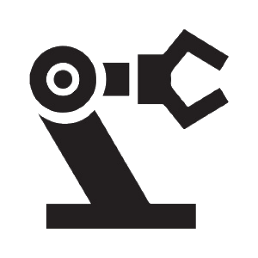

Soy un apasionado por la tecnología con formación en mecatrónica y actualmente estudiante de Ingeniería Informática. Cuento con experiencia en programación (Java, Python, C++) y electrónica, aplicando mis conocimientos en proyectos que integran software y hardware, como sistemas de automatización con Arduino y APIs para monitoreo de dispositivos. Me especializo en el desarrollo de soluciones innovadoras que combinan programación, electrónica y conectividad. Siempre busco aprender y crear tecnología que genere impacto.

Tecnico Industrial en Mecatronica

Tecnico industrial en Mecatronica

Experto en Arduino

Conocimientos en Java

Conocimientos en Python